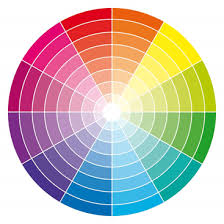

O Círculo Cromático
O círculo cromático é uma representação visual das cores e suas relações. Ele ajuda a entender como as cores podem ser combinadas de forma harmoniosa.
Harmonias Cromáticas
As harmonias cromáticas são combinações de cores que criam um esquema visual agradável. As principais harmonias incluem:
- Monocromática: Variações de uma única cor.
- Análoga: Cores adjacentes no círculo cromático.
- Complementar: Cores opostas no círculo cromático.
- Triádica: Três cores equidistantes.
- Tetrádica: Quatro cores formando um retângulo.

Como Escolher Cores para Elementos do Site
Para escolher cores de elementos como cabeçalhos, parágrafos e links, considere:
- Contraste: Assegure legibilidade.
- Hierarquia: Destaque elementos importantes.
- Consistência: Use cores de forma uniforme.